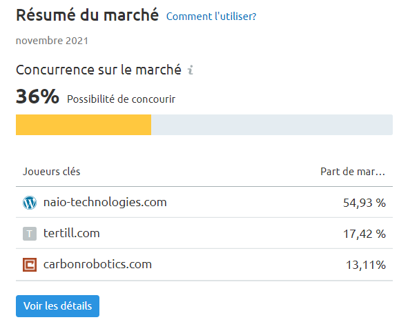
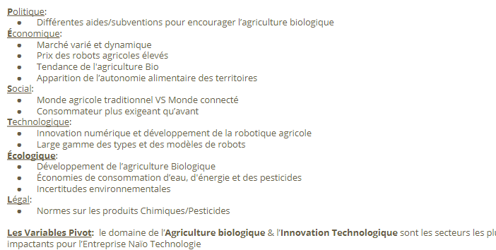
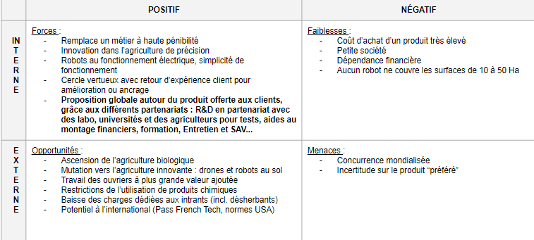
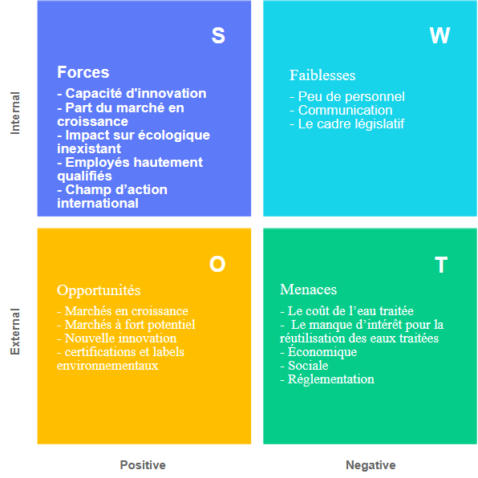

Naïo Technologies
- Analyse des forces concurrentielles :

On observe que l'entreprise n'a pas beaucoup de concurents et est dominante avec 54% des parts du marché. En effet, Le marché du domaine d’activité de Naïo Technologies et presque désert, l’entrée de nouveaux concurrent n’est donc pas une préoccupation prioritaire.
- Analyse de l’environnement avec un outil adapté :
PESTEL :

- Diagnostique Stratégique
SWOT

Ecofilae
Swot

Pestel
Politique :
Encourager les entreprises à passer a l’eau renouvelable
Économique :
Les entreprises développées font appel à Ecofilae pour des conseils, des formations. Ils peuvent aussi :
- d’évaluer la faisabilité et de tester des pratiques de reuse, des qualités d’eau, du matériel et évaluer les impacts de la réutilisation des eaux usées traitées
- d’acquérir des savoir-faire et de former les futurs opérateurs terrain ;
- de rendre visibles et acceptables ces nouvelles boucles de réutilisation d’eau
- de démontrer la sécurité et l’efficacité du système auprès des acteurs publiques et économiques
Social :
Manque d’eau
Consommateur plus exigent
Technologique :
Nouvelle innovation
Écologique :
Développement du recyclage de l’eau
Scotomisation de l’eau
Légale :
Le cadre législatif est une menace pour la société